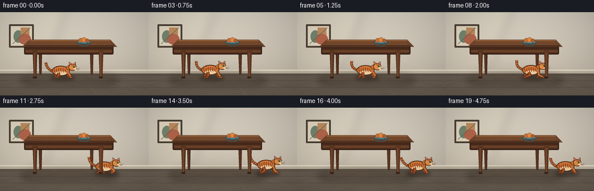
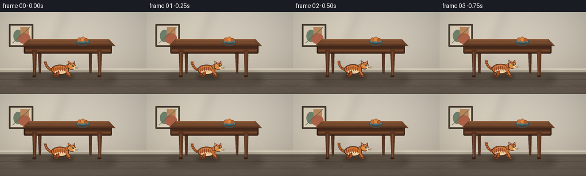
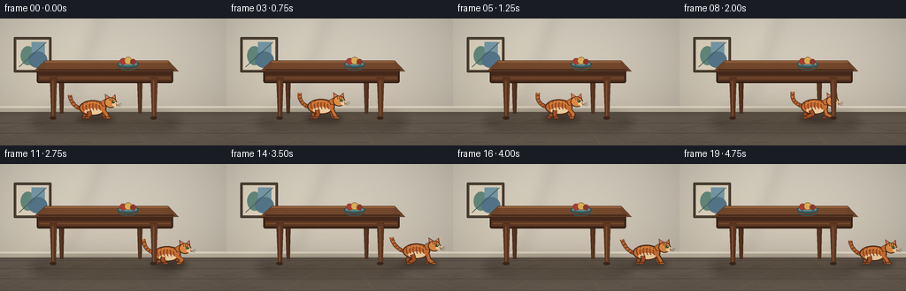
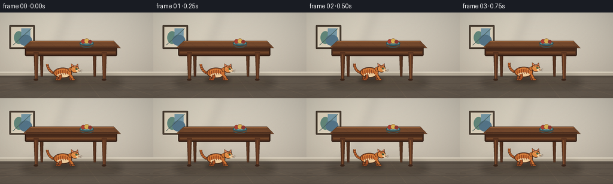
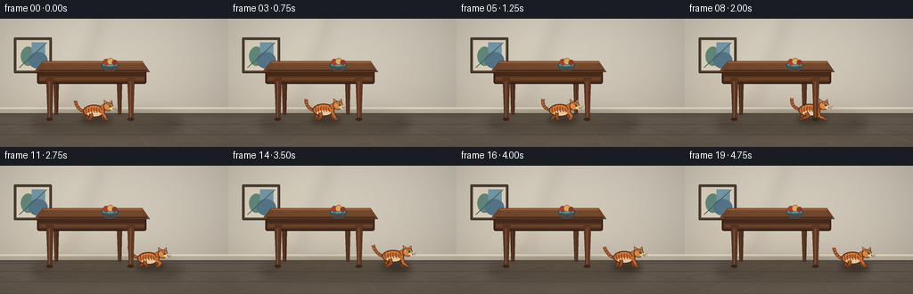
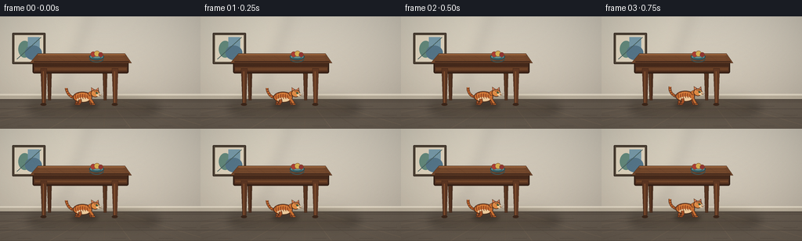

CODING AGENTS AS PIXEL WORLD MODELS
traex/DeepSeek-V4.1-Flash · dynamic_spatial_relationship_0016
点击播放 · 原生 RGB 像素
逐轮保存的候选
回放视频、检查图与代码变化。
每份候选均可单独播放。实际图片检查记录在下方工具轨迹中。
候选 01播放与检查图
点击播放 · 原生 RGB 像素


展开代码变化
--- 上一保存版本
+++ 本次保存版本
@@ -0,0 +1,390 @@
+from pathlib import Path
+import math
+
+import numpy as np
+from PIL import Image, ImageDraw, ImageFilter
+
+import artifact_io
+
+
+WIDTH = 256
+HEIGHT = 144
+FRAMES = 20
+FPS = 4
+SCALE = 4
+W = WIDTH * SCALE
+H = HEIGHT * SCALE
+
+
+def mix(a, b, amount):
+ return tuple(round(x + (y - x) * amount) for x, y in zip(a, b))
+
+
+def smoothstep(value):
+ value = max(0.0, min(1.0, value))
+ return value * value * (3.0 - 2.0 * value)
+
+
+def gradient_background():
+ y = np.linspace(0.0, 1.0, H, dtype=np.float32)[:, None, None]
+ top = np.array([218, 211, 196], dtype=np.float32)
+ bottom = np.array([195, 184, 168], dtype=np.float32)
+ wall = top[None, None, :] * (1.0 - y) + bottom[None, None, :] * y
+ wall = np.repeat(wall, W, axis=1)
+
+ x = np.linspace(-1.0, 1.0, W, dtype=np.float32)[None, :, None]
+ yy = np.linspace(-1.0, 1.0, H, dtype=np.float32)[:, None, None]
+ light = 1.0 - 0.055 * (x * x + 0.45 * yy * yy)
+ wall *= light
+ return Image.fromarray(np.clip(wall, 0, 255).astype(np.uint8), "RGB")
+
+
+def draw_room(image):
+ draw = ImageDraw.Draw(image)
+
+ # Soft sunlight from the upper left.
+ sun = Image.new("RGBA", (W, H), (0, 0, 0, 0))
+ sd = ImageDraw.Draw(sun)
+ sd.polygon([(0, 0), (455, 0), (305, 390), (0, 520)], fill=(255, 244, 215, 35))
+ sun = sun.filter(ImageFilter.GaussianBlur(34))
+ image.alpha_composite(sun) if image.mode == "RGBA" else image.paste(
+ Image.alpha_composite(image.convert("RGBA"), sun).convert("RGB")
+ )
+
+ draw = ImageDraw.Draw(image)
+ floor_top = 410
+ floor = (102, 91, 79)
+ draw.rectangle((0, floor_top, W, H), fill=floor)
+
+ # Receding oak floorboards.
+ vanishing = (W * 0.53, 300)
+ board_colors = [(111, 97, 82), (99, 87, 75), (106, 92, 78)]
+ for index in range(-5, 11):
+ bottom_x = -170 + index * 140
+ draw.line(
+ [(vanishing[0], floor_top), (bottom_x, H)],
+ fill=board_colors[index % len(board_colors)],
+ width=4,
+ )
+ for row, y in enumerate((438, 474, 520, 575)):
+ draw.line((0, y, W, y), fill=(86, 76, 67), width=3)
+ for x in range(-30, W + 100, 240):
+ offset = (row % 2) * 120
+ draw.line((x + offset, y - 14, x + offset + 72, y - 14), fill=(89, 78, 68), width=2)
+
+ # Wall baseboard and a slim shadow line.
+ draw.rectangle((0, 397, W, 426), fill=(188, 177, 158))
+ draw.rectangle((0, 397, W, 405), fill=(226, 216, 197))
+ draw.rectangle((0, 424, W, 431), fill=(89, 79, 69))
+
+ # A restrained framed print keeps the room legible without competing with the action.
+ frame = (62, 84, 232, 244)
+ draw.rounded_rectangle(frame, radius=5, fill=(80, 68, 55), outline=(58, 47, 37), width=4)
+ draw.rectangle((74, 96, 220, 232), fill=(224, 213, 191))
+ draw.ellipse((93, 125, 158, 211), fill=(114, 133, 111))
+ draw.rectangle((142, 106, 202, 197), fill=(190, 139, 93))
+ draw.ellipse((127, 149, 213, 223), fill=(177, 101, 74))
+ draw.line((86, 219, 209, 107), fill=(91, 103, 84), width=4)
+
+ # Broad light pool under the table area.
+ light = Image.new("RGBA", (W, H), (0, 0, 0, 0))
+ ld = ImageDraw.Draw(light)
+ ld.ellipse((165, 382, 790, 550), fill=(255, 228, 180, 27))
+ light = light.filter(ImageFilter.GaussianBlur(35))
+ image.paste(Image.alpha_composite(image.convert("RGBA"), light).convert("RGB"))
+
+ return draw
+
+
+def draw_table_back(image):
+ draw = ImageDraw.Draw(image, "RGBA")
+
+ # Soft contact shadow beneath the furniture.
+ shadow = Image.new("RGBA", (W, H), (0, 0, 0, 0))
+ sd = ImageDraw.Draw(shadow)
+ sd.ellipse((142, 421, 815, 520), fill=(38, 29, 23, 92))
+ shadow = shadow.filter(ImageFilter.GaussianBlur(20))
+ image.paste(Image.alpha_composite(image.convert("RGBA"), shadow).convert("RGB"))
+ draw = ImageDraw.Draw(image, "RGBA")
+
+ # Back legs sit behind the cat.
+ for x, shade in ((278, (76, 46, 30)), (632, (82, 50, 32))):
+ draw.polygon(
+ [(x - 13, 252), (x + 12, 252), (x + 8, 430), (x - 7, 430)],
+ fill=shade,
+ outline=(54, 34, 24),
+ )
+ draw.line((x - 3, 266, x - 2, 424), fill=(104, 63, 38), width=3)
+
+
+def draw_table_front(image):
+ draw = ImageDraw.Draw(image, "RGBA")
+
+ # Underside and front apron.
+ draw.rounded_rectangle((166, 232, 782, 292), radius=9, fill=(69, 41, 27), outline=(47, 29, 20), width=5)
+ draw.rectangle((175, 259, 773, 280), fill=(96, 58, 36))
+ draw.line((179, 269, 770, 269), fill=(123, 77, 45), width=4)
+
+ # Top is a shallow trapezoid, giving it depth at this low camera angle.
+ top_points = [(204, 190), (760, 190), (807, 239), (151, 239)]
+ draw.polygon(top_points, fill=(112, 70, 43), outline=(52, 32, 22))
+ draw.line((204, 195, 760, 195), fill=(159, 104, 63), width=6)
+ draw.line((173, 232, 785, 232), fill=(71, 43, 29), width=7)
+
+ # Tabletop grain follows the perspective of the top.
+ for y, inset, alpha in ((204, 18, 90), (214, 13, 70), (224, 10, 55)):
+ draw.line((194 + inset, y, 772 - inset, y), fill=(155, 99, 60, alpha), width=3)
+ for x in (263, 351, 455, 568, 676):
+ draw.line((x - 20, 201, x + 20, 229), fill=(85, 51, 33, 70), width=2)
+
+ # Front legs, with a small highlight and foot shadow.
+ for x, color in ((242, (91, 54, 34)), (697, (96, 57, 36))):
+ draw.polygon(
+ [(x - 17, 267), (x + 15, 267), (x + 9, 452), (x - 10, 452)],
+ fill=color,
+ outline=(50, 31, 21),
+ )
+ draw.line((x - 3, 282, x - 3, 444), fill=(133, 82, 49), width=5)
+ draw.ellipse((x - 18, 444, x + 13, 458), fill=(60, 38, 26))
+
+ # Ceramic bowl is a calm secondary object.
+ draw.ellipse((531, 190, 626, 224), fill=(66, 104, 111), outline=(42, 72, 78), width=4)
+ draw.ellipse((538, 194, 619, 216), fill=(103, 146, 148))
+ draw.arc((547, 199, 611, 218), 8, 172, fill=(53, 91, 96), width=5)
+ for cx, cy, radius, color in (
+ (556, 194, 15, (203, 111, 53)),
+ (579, 191, 17, (220, 137, 65)),
+ (601, 196, 13, (180, 94, 49)),
+ ):
+ draw.ellipse((cx - radius, cy - radius, cx + radius, cy + radius), fill=color, outline=(126, 69, 38), width=2)
+
+ # Keep a crisp front lip over the bowl base.
+ draw.arc((531, 197, 626, 235), 5, 175, fill=(48, 83, 90), width=4)
+
+
+def cubic_points(p0, p1, p2, p3, count=18):
+ points = []
+ for index in range(count):
+ t = index / (count - 1)
+ u = 1.0 - t
+ x = u**3 * p0[0] + 3 * u * u * t * p1[0] + 3 * u * t * t * p2[0] + t**3 * p3[0]
+ y = u**3 * p0[1] + 3 * u * u * t * p1[1] + 3 * u * t * t * p2[1] + t**3 * p3[1]
+ points.append((x, y))
+ return points
+
+
+def draw_cat_shadow(image, anchor_x, baseline, width=165):
+ shadow = Image.new("RGBA", (W, H), (0, 0, 0, 0))
+ sd = ImageDraw.Draw(shadow)
+ sd.ellipse(
+ (anchor_x - width * 0.55, baseline - 14, anchor_x + width * 0.50, baseline + 19),
+ fill=(38, 27, 21, 120),
+ )
+ shadow = shadow.filter(ImageFilter.GaussianBlur(12))
+ image.paste(Image.alpha_composite(image.convert("RGBA"), shadow).convert("RGB"))
+
+
+def draw_leg(draw, hip, knee, foot, color, outline, width, foot_w, foot_h):
+ points = [hip, knee, foot]
+ draw.line(points, fill=outline, width=width + 7, joint="curve")
+ draw.line(points, fill=color, width=width, joint="curve")
+ draw.ellipse(
+ (foot[0] - foot_w / 2, foot[1] - foot_h / 2, foot[0] + foot_w / 2, foot[1] + foot_h / 2),
+ fill=color,
+ outline=outline,
+ width=3,
+ )
+
+
+def draw_cat(image, anchor_x, baseline, motion, phase):
+ draw = ImageDraw.Draw(image, "RGBA")
+ outline = (73, 42, 27)
+ orange = (203, 112, 50)
+ orange_light = (224, 139, 67)
+ orange_dark = (168, 81, 37)
+ cream = (238, 205, 158)
+ stripe = (139, 65, 33)
+
+ bob = 4.5 * math.sin(phase * math.tau * 3.0) * motion
+ stride = 19.0 * math.sin(phase * math.tau * 3.0) * motion
+ lift = 7.0 * math.sin(math.pi * min(1.0, motion)) + bob
+ body_y = baseline - 47.0 - lift
+ head_y = body_y - 25.0 + 2.0 * math.sin(phase * math.tau * 6.0) * motion
+ head_x = anchor_x + 70.0
+
+ # Tail, deliberately large enough to read at 256 px.
+ tail_base = (anchor_x - 52, body_y + 4)
+ tail_mid_1 = (anchor_x - 88, body_y + 8 - 20 * motion)
+ tail_mid_2 = (anchor_x - 112, body_y - 35 + 18 * motion)
+ tail_tip = (
+ anchor_x - 113 + 9 * math.sin(phase * math.tau),
+ body_y - 58 - 10 * motion,
+ )
+ tail_points = cubic_points(tail_base, tail_mid_1, tail_mid_2, tail_tip, 20)
+ draw.line(tail_points, fill=outline, width=18, joint="curve")
+ draw.line(tail_points, fill=orange, width=12, joint="curve")
+ for point in tail_points[5:18:3]:
+ draw.ellipse((point[0] - 5, point[1] - 4, point[0] + 5, point[1] + 4), fill=stripe)
+
+ # Far legs are darker to preserve a clear near/far silhouette.
+ far = (157, 79, 38)
+ draw_leg(
+ draw,
+ (anchor_x - 38, body_y + 14),
+ (anchor_x - 47 - stride * 0.35, baseline - 18),
+ (anchor_x - 48 + stride * 0.55, baseline - 2),
+ far,
+ outline,
+ 12,
+ 22,
+ 11,
+ )
+ draw_leg(
+ draw,
+ (anchor_x + 31, body_y + 13),
+ (anchor_x + 40 + stride * 0.35, baseline - 17),
+ (anchor_x + 45 - stride * 0.60, baseline - 2),
+ far,
+ outline,
+ 11,
+ 21,
+ 10,
+ )
+
+ # Torso with a cream belly and tabby markings.
+ torso = (anchor_x - 72, body_y - 35, anchor_x + 52, body_y + 35)
+ draw.ellipse(torso, fill=outline)
+ draw.ellipse((torso[0] + 5, torso[1] + 5, torso[2] - 5, torso[3] - 5), fill=orange)
+ draw.ellipse(
+ (anchor_x - 47, body_y + 2, anchor_x + 30, body_y + 30),
+ fill=cream,
+ )
+ for x_offset in (-50, -35, -20, -5, 10, 25):
+ sx = anchor_x + x_offset
+ draw.arc((sx - 7, body_y - 27, sx + 8, body_y + 11), 82, 262, fill=stripe, width=5)
+ draw.arc((anchor_x - 55, body_y - 25, anchor_x + 32, body_y + 27), 204, 336, fill=orange_light, width=4)
+
+ # Neck and head.
+ draw.polygon(
+ [(anchor_x + 24, body_y - 28), (anchor_x + 48, body_y - 42), (anchor_x + 62, head_y + 15), (anchor_x + 33, head_y + 18)],
+ fill=outline,
+ )
+ draw.polygon(
+ [(anchor_x + 27, body_y - 28), (anchor_x + 46, body_y - 38), (anchor_x + 58, head_y + 15), (anchor_x + 35, head_y + 15)],
+ fill=orange,
+ )
+
+ # Ears behind the head shape.
+ left_ear = [
+ (head_x - 22, head_y - 10),
+ (head_x - 25, head_y - 38),
+ (head_x + 2, head_y - 21),
+ ]
+ right_ear = [
+ (head_x + 3, head_y - 21),
+ (head_x + 21, head_y - 37),
+ (head_x + 25, head_y - 6),
+ ]
+ for ear, inner in (
+ (left_ear, [(head_x - 17, head_y - 15), (head_x - 18, head_y - 31), (head_x - 2, head_y - 19)]),
+ (right_ear, [(head_x + 7, head_y - 19), (head_x + 18, head_y - 30), (head_x + 20, head_y - 11)]),
+ ):
+ draw.polygon(ear, fill=outline)
+ draw.polygon(
+ [(x + (head_x - x) * 0.10, y + (head_y - y) * 0.10) for x, y in ear],
+ fill=orange,
+ )
+ draw.polygon(inner, fill=(213, 132, 111))
+
+ # Head silhouette and face.
+ draw.ellipse((head_x - 27, head_y - 23, head_x + 29, head_y + 25), fill=outline)
+ draw.ellipse((head_x - 23, head_y - 20, head_x + 25, head_y + 21), fill=orange_light)
+ draw.ellipse((head_x + 8, head_y - 1, head_x + 34, head_y + 20), fill=cream)
+ draw.ellipse((head_x - 13, head_y - 20, head_x + 9, head_y - 1), fill=(232, 153, 83))
+
+ # Forehead tabby M, eye, nose, and whiskers.
+ draw.line((head_x - 8, head_y - 19, head_x - 5, head_y - 7), fill=stripe, width=4)
+ draw.line((head_x + 1, head_y - 19, head_x + 2, head_y - 6), fill=stripe, width=4)
+ draw.line((head_x + 10, head_y - 17, head_x + 8, head_y - 6), fill=stripe, width=4)
+ draw.ellipse((head_x + 4, head_y - 7, head_x + 20, head_y + 4), fill=(73, 121, 64), outline=(46, 69, 39), width=2)
+ draw.ellipse((head_x + 11, head_y - 6, head_x + 18, head_y + 2), fill=(24, 27, 19))
+ draw.ellipse((head_x + 14, head_y - 5, head_x + 17, head_y - 1), fill=(237, 232, 202))
+ draw.polygon(
+ [(head_x + 24, head_y + 5), (head_x + 31, head_y + 7), (head_x + 25, head_y + 11)],
+ fill=(145, 73, 68),
+ )
+ draw.line((head_x + 27, head_y + 12, head_x + 27, head_y + 17), fill=outline, width=2)
+ for end in (
+ (head_x + 49, head_y + 3),
+ (head_x + 50, head_y + 11),
+ (head_x + 45, head_y + 19),
+ ):
+ draw.line((head_x + 27, head_y + 13, end[0], end[1]), fill=(95, 70, 51), width=2)
+
+ # Near legs and paws.
+ draw_leg(
+ draw,
+ (anchor_x - 28, body_y + 14),
+ (anchor_x - 24 + stride * 0.40, baseline - 18),
+ (anchor_x - 34 - stride, baseline - 2),
+ orange_dark,
+ outline,
+ 14,
+ 25,
+ 12,
+ )
+ draw_leg(
+ draw,
+ (anchor_x + 40, body_y + 14),
+ (anchor_x + 51 - stride * 0.40, baseline - 18),
+ (anchor_x + 60 + stride, baseline - 2),
+ orange,
+ outline,
+ 13,
+ 24,
+ 12,
+ )
+
+ # Tiny dark paw separations make the feet legible after downsampling.
+ for foot_x in (
+ anchor_x - 34 - stride,
+ anchor_x + 60 + stride,
+ ):
+ draw.line((foot_x, baseline - 7, foot_x, baseline + 1), fill=(111, 57, 31), width=2)
+
+
+def render_frame(index):
+ t = index / (FRAMES - 1)
+ motion_window = smoothstep((t - 0.10) / 0.72)
+ run_energy = math.sin(math.pi * max(0.0, min(1.0, (t - 0.08) / 0.80)))
+ anchor_x = 429.0 + 408.0 * motion_window
+
+ image = gradient_background()
+ draw_room(image)
+ draw_table_back(image)
+ draw_cat_shadow(image, anchor_x + 6, 452, 160)
+ draw_cat(image, anchor_x, 452, run_energy, t)
+ draw_table_front(image)
+
+ # Very subtle film grain and a vignette keep the flat-color render cohesive.
+ rng = np.random.default_rng(1000 + index)
+ pixels = np.asarray(image.convert("RGB"), dtype=np.int16)
+ grain = rng.normal(0.0, 2.0, (H, W, 1)).astype(np.int16)
+ pixels = np.clip(pixels + grain, 0, 255)
+
+ yy, xx = np.mgrid[-1:1:complex(H), -1:1:complex(W)]
+ vignette = 1.0 - 0.12 * np.clip((xx * xx + yy * yy) * 0.52, 0, 1)
+ pixels = np.clip(pixels.astype(np.float32) * vignette[:, :, None], 0, 255).astype(np.uint8)
+ image = Image.fromarray(pixels, "RGB")
+ return np.asarray(image.resize((WIDTH, HEIGHT), Image.Resampling.LANCZOS), dtype=np.uint8)
+
+
+def main():
+ case_dir = Path(__file__).resolve().parent
+ frames = np.stack([render_frame(index) for index in range(FRAMES)])
+ artifact_io.save(frames, case_dir)
+ print(f"saved {len(frames)} frames to {case_dir}")
+
+
+if __name__ == "__main__":
+ main()
候选 02播放与检查图
点击播放 · 原生 RGB 像素


展开代码变化
--- 上一保存版本
+++ 本次保存版本
@@ -36,7 +36,7 @@
yy = np.linspace(-1.0, 1.0, H, dtype=np.float32)[:, None, None]
light = 1.0 - 0.055 * (x * x + 0.45 * yy * yy)
wall *= light
- return Image.fromarray(np.clip(wall, 0, 255).astype(np.uint8), "RGB")
+ return Image.fromarray(np.clip(wall, 0, 255).astype(np.uint8))
def draw_room(image):
@@ -81,10 +81,10 @@
frame = (62, 84, 232, 244)
draw.rounded_rectangle(frame, radius=5, fill=(80, 68, 55), outline=(58, 47, 37), width=4)
draw.rectangle((74, 96, 220, 232), fill=(224, 213, 191))
- draw.ellipse((93, 125, 158, 211), fill=(114, 133, 111))
- draw.rectangle((142, 106, 202, 197), fill=(190, 139, 93))
- draw.ellipse((127, 149, 213, 223), fill=(177, 101, 74))
- draw.line((86, 219, 209, 107), fill=(91, 103, 84), width=4)
+ draw.ellipse((93, 125, 158, 211), fill=(101, 139, 126))
+ draw.rectangle((142, 106, 202, 197), fill=(120, 155, 170))
+ draw.ellipse((127, 149, 213, 223), fill=(86, 119, 139))
+ draw.line((86, 219, 209, 107), fill=(72, 96, 93), width=4)
# Broad light pool under the table area.
light = Image.new("RGBA", (W, H), (0, 0, 0, 0))
@@ -152,9 +152,9 @@
draw.ellipse((538, 194, 619, 216), fill=(103, 146, 148))
draw.arc((547, 199, 611, 218), 8, 172, fill=(53, 91, 96), width=5)
for cx, cy, radius, color in (
- (556, 194, 15, (203, 111, 53)),
- (579, 191, 17, (220, 137, 65)),
- (601, 196, 13, (180, 94, 49)),
+ (556, 194, 15, (173, 61, 53)),
+ (579, 191, 17, (215, 176, 83)),
+ (601, 196, 13, (144, 53, 51)),
):
draw.ellipse((cx - radius, cy - radius, cx + radius, cy + radius), fill=color, outline=(126, 69, 38), width=2)
@@ -357,7 +357,7 @@
t = index / (FRAMES - 1)
motion_window = smoothstep((t - 0.10) / 0.72)
run_energy = math.sin(math.pi * max(0.0, min(1.0, (t - 0.08) / 0.80)))
- anchor_x = 429.0 + 408.0 * motion_window
+ anchor_x = 429.0 + 456.0 * motion_window
image = gradient_background()
draw_room(image)
@@ -375,7 +375,7 @@
yy, xx = np.mgrid[-1:1:complex(H), -1:1:complex(W)]
vignette = 1.0 - 0.12 * np.clip((xx * xx + yy * yy) * 0.52, 0, 1)
pixels = np.clip(pixels.astype(np.float32) * vignette[:, :, None], 0, 255).astype(np.uint8)
- image = Image.fromarray(pixels, "RGB")
+ image = Image.fromarray(pixels)
return np.asarray(image.resize((WIDTH, HEIGHT), Image.Resampling.LANCZOS), dtype=np.uint8)
候选 03播放与检查图
点击播放 · 原生 RGB 像素


展开代码变化
--- 上一保存版本
+++ 本次保存版本
@@ -14,6 +14,7 @@
SCALE = 4
W = WIDTH * SCALE
H = HEIGHT * SCALE
+CAT_SCALE = 0.80
def mix(a, b, amount):
@@ -108,7 +109,7 @@
draw = ImageDraw.Draw(image, "RGBA")
# Back legs sit behind the cat.
- for x, shade in ((278, (76, 46, 30)), (632, (82, 50, 32))):
+ for x, shade in ((252, (76, 46, 30)), (536, (82, 50, 32))):
draw.polygon(
[(x - 13, 252), (x + 12, 252), (x + 8, 430), (x - 7, 430)],
fill=shade,
@@ -121,24 +122,24 @@
draw = ImageDraw.Draw(image, "RGBA")
# Underside and front apron.
- draw.rounded_rectangle((166, 232, 782, 292), radius=9, fill=(69, 41, 27), outline=(47, 29, 20), width=5)
- draw.rectangle((175, 259, 773, 280), fill=(96, 58, 36))
- draw.line((179, 269, 770, 269), fill=(123, 77, 45), width=4)
+ draw.rounded_rectangle((166, 232, 656, 292), radius=9, fill=(69, 41, 27), outline=(47, 29, 20), width=5)
+ draw.rectangle((175, 259, 648, 280), fill=(96, 58, 36))
+ draw.line((179, 269, 645, 269), fill=(123, 77, 45), width=4)
# Top is a shallow trapezoid, giving it depth at this low camera angle.
- top_points = [(204, 190), (760, 190), (807, 239), (151, 239)]
+ top_points = [(193, 190), (638, 190), (672, 239), (151, 239)]
draw.polygon(top_points, fill=(112, 70, 43), outline=(52, 32, 22))
- draw.line((204, 195, 760, 195), fill=(159, 104, 63), width=6)
- draw.line((173, 232, 785, 232), fill=(71, 43, 29), width=7)
+ draw.line((193, 195, 638, 195), fill=(159, 104, 63), width=6)
+ draw.line((173, 232, 659, 232), fill=(71, 43, 29), width=7)
# Tabletop grain follows the perspective of the top.
for y, inset, alpha in ((204, 18, 90), (214, 13, 70), (224, 10, 55)):
- draw.line((194 + inset, y, 772 - inset, y), fill=(155, 99, 60, alpha), width=3)
- for x in (263, 351, 455, 568, 676):
+ draw.line((185 + inset, y, 647 - inset, y), fill=(155, 99, 60, alpha), width=3)
+ for x in (242, 312, 395, 486, 571):
draw.line((x - 20, 201, x + 20, 229), fill=(85, 51, 33, 70), width=2)
# Front legs, with a small highlight and foot shadow.
- for x, color in ((242, (91, 54, 34)), (697, (96, 57, 36))):
+ for x, color in ((224, (91, 54, 34)), (588, (96, 57, 36))):
draw.polygon(
[(x - 17, 267), (x + 15, 267), (x + 9, 452), (x - 10, 452)],
fill=color,
@@ -148,18 +149,18 @@
draw.ellipse((x - 18, 444, x + 13, 458), fill=(60, 38, 26))
# Ceramic bowl is a calm secondary object.
- draw.ellipse((531, 190, 626, 224), fill=(66, 104, 111), outline=(42, 72, 78), width=4)
- draw.ellipse((538, 194, 619, 216), fill=(103, 146, 148))
- draw.arc((547, 199, 611, 218), 8, 172, fill=(53, 91, 96), width=5)
+ draw.ellipse((455, 190, 531, 224), fill=(66, 104, 111), outline=(42, 72, 78), width=4)
+ draw.ellipse((461, 194, 525, 216), fill=(103, 146, 148))
+ draw.arc((468, 199, 518, 218), 8, 172, fill=(53, 91, 96), width=5)
for cx, cy, radius, color in (
- (556, 194, 15, (173, 61, 53)),
- (579, 191, 17, (215, 176, 83)),
- (601, 196, 13, (144, 53, 51)),
+ (476, 194, 14, (173, 61, 53)),
+ (495, 191, 15, (215, 176, 83)),
+ (514, 196, 12, (144, 53, 51)),
):
draw.ellipse((cx - radius, cy - radius, cx + radius, cy + radius), fill=color, outline=(126, 69, 38), width=2)
# Keep a crisp front lip over the bowl base.
- draw.arc((531, 197, 626, 235), 5, 175, fill=(48, 83, 90), width=4)
+ draw.arc((455, 197, 531, 235), 5, 175, fill=(48, 83, 90), width=4)
def cubic_points(p0, p1, p2, p3, count=18):
@@ -353,17 +354,31 @@
draw.line((foot_x, baseline - 7, foot_x, baseline + 1), fill=(111, 57, 31), width=2)
+def draw_cat_scaled(image, anchor_x, baseline, motion, phase):
+ layer = Image.new("RGBA", (W, H), (0, 0, 0, 0))
+ draw_cat(layer, anchor_x, baseline, motion, phase)
+ left, top, right, bottom = anchor_x - 150, 310, anchor_x + 140, 480
+ cat = layer.crop((left, top, right, bottom))
+ cat = cat.resize(
+ (round(cat.width * CAT_SCALE), round(cat.height * CAT_SCALE)),
+ Image.Resampling.LANCZOS,
+ )
+ paste_x = round(anchor_x - 150 * CAT_SCALE)
+ paste_y = round(baseline - (baseline - top) * CAT_SCALE)
+ image.paste(cat.convert("RGB"), (paste_x, paste_y), cat.getchannel("A"))
+
+
def render_frame(index):
t = index / (FRAMES - 1)
motion_window = smoothstep((t - 0.10) / 0.72)
run_energy = math.sin(math.pi * max(0.0, min(1.0, (t - 0.08) / 0.80)))
- anchor_x = 429.0 + 456.0 * motion_window
+ anchor_x = 429.0 + 331.0 * motion_window
image = gradient_background()
draw_room(image)
draw_table_back(image)
- draw_cat_shadow(image, anchor_x + 6, 452, 160)
- draw_cat(image, anchor_x, 452, run_energy, t)
+ draw_cat_shadow(image, anchor_x + 6, 452, 128)
+ draw_cat_scaled(image, anchor_x, 452, run_energy, t)
draw_table_front(image)
# Very subtle film grain and a vignette keep the flat-color render cohesive.
可观测工具轨迹
实际执行的命令与返回图片。
命令 1exit 0
/bin/bash -c "sed -n '1,240p' prompt.txt"
命令 2exit 0
/bin/bash -c "sed -n '1,280p' GENERATION_RULES.md"
命令 3exit 0
/bin/bash -c 'cat task_spec.json'
命令 4exit 0
/bin/bash -c "find . -maxdepth 2 -type f -printf '%p\\n' | sort | head -200"
命令 5exit 0
/bin/bash -c "sed -n '1,260p' artifact_io.py"
命令 6exit 1
/bin/bash -c 'python generate.py'
命令 7exit 0
/bin/bash -c 'python generate.py'
命令 8exit 0
/bin/bash -c "python - <<'PY'
from PIL import Image
import numpy as np
for idx in [0,5,10,14,19]:
a=np.asarray(Image.open(f'frames/{idx:02d}.png')).astype(int)
# Orange fur: red dominant, medium green, low blue
m=(a[:,:,0]>135)&(a[:,:,0]>a[:,:,1]*1.25)&(a[:,:,1]>45)&(a[:,:,2]<105)
ys,xs=np.where(m)
print(idx, 'orange bbox', (xs.min(),ys.min(),xs.max(),ys.max()) if len(xs) else None, 'count',len(xs))
PY"命令 9exit 0
/bin/bash -c "python - <<'PY'
from PIL import Image
import numpy as np
for idx in [0,5,10,14,19]:
a=np.asarray(Image.open(f'frames/{idx:02d}.png').convert('L'))
print(idx, 'mean', round(float(a.mean()),1), 'min',int(a.min()), 'max',int(a.max()), 'std',round(float(a.std()),1))
PY"命令 10exit 0
/bin/bash -c 'ls -lh pixels.npz inspection.png transition_check.png index.html frames/00.png frames/19.png'
命令 11exit 0
/bin/bash -c 'command -v chafa || command -v viu || command -v jp2 || command -v img2txt || true'
命令 12exit 0
/bin/bash -c "python - <<'PY'
from PIL import Image
import numpy as np
for idx in (0,6,10,13,19):
a=np.asarray(Image.open(f'frames/{idx:02d}.png')).astype(int)
# coarser 64x36 symbolic color classification
chars=[]
for by in range(36):
row=''
for bx in range(64):
block=a[by*4:(by+1)*4,bx*4:(bx+1)*4].reshape(-1,3).mean(0)
r,g,b=block
if r>130 and r>g*1.2 and b<120: c='O'
elif r<90 and g<70 and b<60: c='#'
elif r>140 and g>120 and b>90 and r>g and g>b: c='.'
elif r>85 and g>65 and b<90 and r>g*1.1: c='t'
elif b>g and g>r*0.8 and g>90: c='B'
elif r<125 and g<115 and b<105: c='_'
else: c=' '
row+=c
chars.append(row.rstrip())
print('\\nFRAME',idx)
print('\\n'.join(chars))
PY"命令 13exit 0
/bin/bash -c 'python generate.py'
命令 14exit 0
/bin/bash -c "python - <<'PY'
from PIL import Image
import numpy as np
for idx in range(20):
a=np.asarray(Image.open(f'frames/{idx:02d}.png')).astype(int)
r,g,b=a[:,:,0],a[:,:,1],a[:,:,2]
m=(r>145)&(r>g*1.35)&(g>55)&(g<175)&(b<115)
ys,xs=np.where(m)
print(f'{idx:02d} x={xs.min():3d}..{xs.max():3d} y={ys.min():3d}..{ys.max():3d} n={len(xs)}')
PY"命令 15exit 0
/bin/bash -c "python - <<'PY'
from PIL import Image
import numpy as np
for idx in (0,8,10,12,14,19):
a=np.asarray(Image.open(f'frames/{idx:02d}.png')).astype(int)
# Sample cat torso/head region excluding the orange picture frame and bowl.
reg=a[43:114,45:251]
r,g,b=reg[:,:,0],reg[:,:,1],reg[:,:,2]
m=(r>145)&(r>g*1.35)&(g>55)&(g<175)&(b<115)
ys,xs=np.where(m)
print(idx, 'cat-colored pixels',len(xs),'bbox', (xs.min()+45,ys.min()+43,xs.max()+45,ys.max()+43))
PY"命令 16exit 0
/bin/bash -c 'git status --short 2>/dev/null || true'
命令 17exit 0
/bin/bash -c 'du -h pixels.npz index.html inspection.png transition_check.png frames | tail -8'
命令 18exit 0
/bin/bash -c "python - <<'PY'
from pathlib import Path
from PIL import Image
import numpy as np
frames=np.stack([np.asarray(Image.open(p)) for p in sorted(Path('frames').glob('*.png'))])
z=np.load('pixels.npz')['pixels']
print('frames', frames.shape, frames.dtype)
print('npz', z.shape, z.dtype, 'packed RGB')
print('frame modes', sorted({Image.open(p).mode for p in Path('frames').glob('*.png')}))
diffs=np.abs(np.diff(frames.astype(np.int16),axis=0)).mean(axis=(1,2,3))
print('temporal mean abs diff', round(float(diffs.mean()),3), 'moving-frame max', round(float(diffs.max()),3))
print('frame-0/19 mean abs diff', round(float(np.abs(frames[0].astype(int)-frames[19].astype(int)).mean()),3))
print('nonblank', bool(frames.min() < frames.max()), 'unique colors', len(np.unique(frames.reshape(-1,3),axis=0)))
PY"命令 19exit 0
/bin/bash -c 'python generate.py'
命令 20exit 0
/bin/bash -c "python - <<'PY'
from PIL import Image
import numpy as np
for idx in (0,6,10,13,16,19):
a=np.asarray(Image.open(f'frames/{idx:02d}.png')).astype(int)
chars=[]
for by in range(36):
row=''
for bx in range(64):
block=a[by*4:(by+1)*4,bx*4:(bx+1)*4].reshape(-1,3).mean(0)
r,g,b=block
if r>140 and r>g*1.35 and b<110: c='O'
elif r<90 and g<70 and b<60: c='#'
elif r>140 and g>120 and b>90 and r>g and g>b: c='.'
elif r>85 and g>65 and b<90 and r>g*1.1: c='t'
elif b>g and g>r*0.8 and g>90: c='B'
elif r<125 and g<115 and b<105: c='_'
else: c=' '
row+=c
chars.append(row.rstrip())
print('\\nFRAME',idx)
print('\\n'.join(chars))
PY"命令 21exit 0
/bin/bash -c "python - <<'PY'
from pathlib import Path
from PIL import Image
import numpy as np
frames = np.stack([np.asarray(Image.open(p).convert('RGB')) for p in sorted(Path('frames').glob('*.png'))])
assert frames.shape == (20, 144, 256, 3) and frames.dtype == np.uint8
for idx in (0, 10, 19):
a = frames[idx].astype(int)
r, g, b = a[:, :, 0], a[:, :, 1], a[:, :, 2]
mask = (r > 135) & (r > g * 1.25) & (g > 45) & (g < 180) & (b < 120)
mask[:78] = False
mask[116:] = False
y, x = np.where(mask)
print(f'frame {idx:02d}: cat-color bbox x={x.min()}..{x.max()} y={y.min()}..{y.max()} pixels={len(x)}')
print('frame shape:', frames.shape)
print('pixels.npz:', np.load('pixels.npz')['pixels'].shape)
print('frame modes:', sorted({Image.open(p).mode for p in Path('frames').glob('*.png')}))
print('artifacts:', all(Path(p).is_file() and Path(p).stat().st_size > 0 for p in ('generate.py','pixels.npz','index.html','inspection.png','transition_check.png')))
PY
python -m py_compile generate.py"保存候选 3 份；完成命令 21 次；可验证图片返回 0 张。原始 API 响应与完整日志保留在本地。